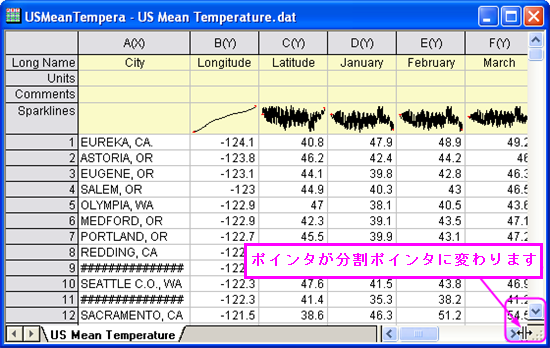
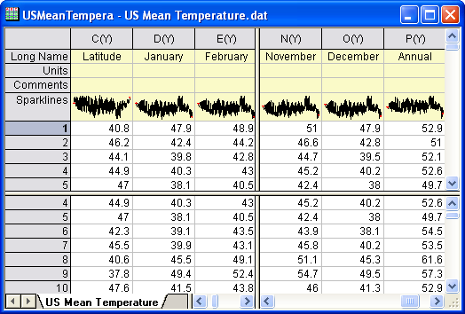

ディバイダを使ってワークシートをパネルに分割する
Origin8.5.1では、ディバイダを使ってワークシートと行列シートがパネルに分割できます。 他のパネルを表示したまま、分割された各パネル内でスクロールができます。
ワークシート/行列シートの分割
Originのメニューから、またはディバイダをドラッグして、ワークシート/行列シートを分割できます。
-
- ワークシートまたは行列シートをアクティブにします。セルを選択します。
- メニューから、ウィンドウ: 分割を選択します。
- 選択されたセルを中心に、ワークシートまたは行列シートは水平および垂直なディバイダによって4つのパネルに分割されます。ディバイダを違う場所に移動するには、目的の行または列にディバイダをドラッグするだけで可能です。
-
- 選択したセルが最初の列または行にある場合、水平または垂直のディバイダしか作成されません。
-
- 右下のシートの一番下の垂直なスクロールバー(水平ディバイダ)か、右下の水平なスクロールバー(垂直ディバイダ)ににカーソルを合わせます。
- ポインタが分割ポインターに変わったら、目的の位置までドラッグします。水平または垂直なディバイダが作成されます。
- 
- 水平または垂直なディバイダに分割されたワークシートは下図のようになります。
- 
ワークシートまたは行列シートの分割を削除する
ワークシートまたは行列シートの分割を削除するのも、メニューまたはディバイダをドラッグすることで可能です。
-
- ワークシートまたは行列シートをアクティブにします。
- メニューから、ウィンドウ: 分割を削除を選択します。
-
- 水平または垂直ディバイダをドラッグしてワークシートまたは行列シートの外に移動させると、水平または垂直ディバイダは削除できます。
イメージモードの行列シートは分割、分割の削除ができません。